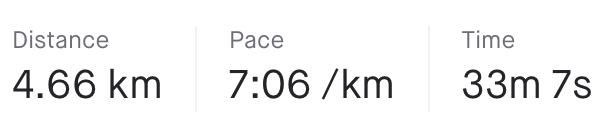
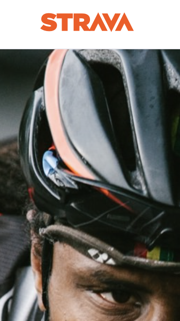

Bye, Strava.. I am not an "athlete" and I never will be.
## The Unrecorded Run
It's that time again, I mentally prepare for a run. For me personally, there is always some resistance to starting a run.
A run after a while, becomes a ritual: preparation, running, and aftercare.
In the preparation phase the random questions hit me, questions like: "Should I record this run?" That specific question leads to more questions: "Can I go fast?", "How far am I going to run?", "How do I feel?"
Lately I've noticed that posting my runs to Strava kinda stresses me out. Because when my run shows up in that feed, the datapoints that get shared with others are kind of intimidating.
Distance/Time/Pace

Why are these three things important to my followers? They might be important to me, actually I don't really know if they are important to me at all.
I am not an athlete, but still it bugs me if I don't upload or record my run, it almost feels "lost" if I don't record my progress.

## The Kudo thing
Small confession: I only look at the feed just after I uploaded my run/ride, this sometimes takes a while, and when I have the app open I browse other people's runs until its finished.
I hand out kudo's to almost everyone on my feed. Exercise is hard and getting out there and doing something is always something to be appreciated. When I receive my steady flow of 5 kudo's per run, it helps.
But I see people recording their afternoon walks, indoor bike training and vacation ski events almost obsessively. Every activity counts.. but towards what exactly?
## See ya
And I wish you guys good luck, i'd love to jump on a new platform, one that actually motivates me. But it's kind of discouraging, there is nothing fun about a new empty platform.